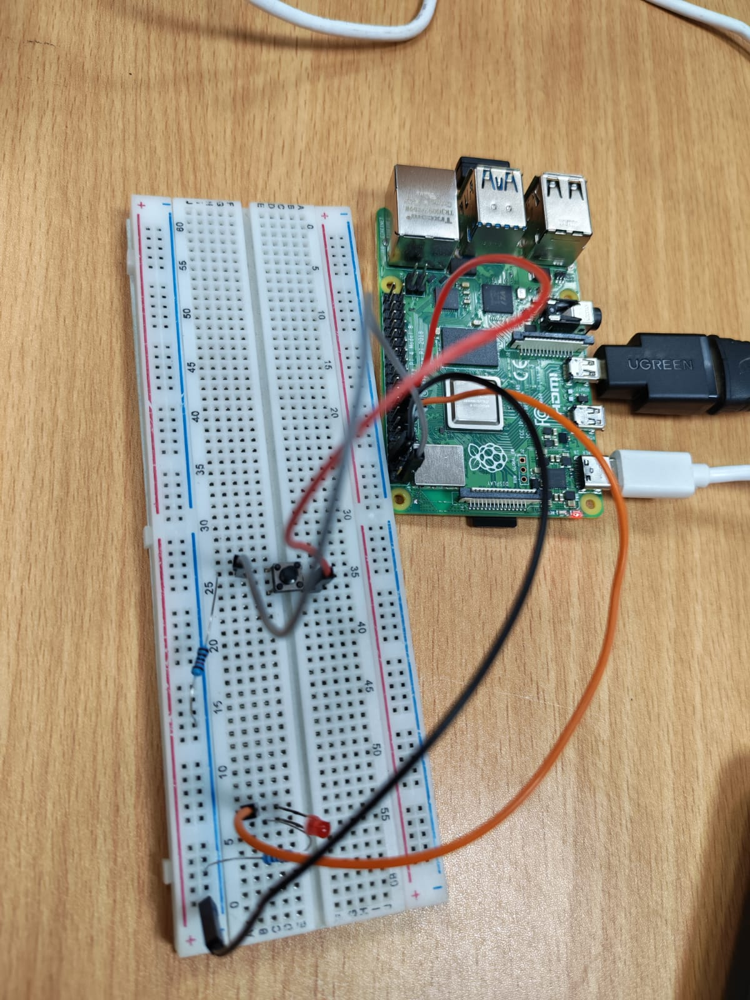

Nile University
Summer Research Internship
IoT Track
A hands-on research internship covering Raspberry Pi, Internet of Things (IoT), MQTT Communication, Cloud Dashboards, and Real-Time Operating Systems (RTOS).
What we'll cover click to reveal ▸
01 · Introduction
Overview of the internship, objectives, and the research roadmap.
02 · Raspberry Pi Development
Linux, Python programming, GPIO interfacing, sensors, and embedded application development.
03 · IoT & RTOS Applications
MQTT communication, cloud dashboards, and real-time embedded systems using the TI CC1352 LaunchPad.
04 · Results
Demonstrations, project outcomes, and the technical skills acquired throughout the internship.
A Four-Week Journey into Internet of Things
we spent four weeks working in the (NISC), attending laboratory sessions twice per week to explore the fundamentals of IoT
Build a practical understanding of modern IoT systems by combining embedded programming, network communication, cloud platforms, and real-time operating systems.
Learning Step by Step click to build ▸
The internship was organized as a progressive learning journey, where every stage built upon the previous one.
Python Basics
Sensors
Hardware Interfacing
Networking
Communication
Grafana Dashboard
Task Scheduling
Embedded Linux, Python and hardware interfacing.
MQTT communication, cloud databases and dashboards.
Real-time embedded software using the TI CC1352 LaunchPad.
By the end of the internship, we successfully combined embedded hardware, IoT communication, cloud visualization, and real-time software development into a complete embedded systems workflow.
Task 1 — LED Blink Control using a Push Button click to build ▸
A simple embedded application demonstrating how a Raspberry Pi reads a digital input from a push button and controls a digital output by turning an LED on and off.
- Read the state of a push button using a Raspberry Pi GPIO input.
- Control an LED through a GPIO output pin.
- Implement the control logic using C.
- Understand the relationship between hardware connections and software execution.
A digital input from the push button is continuously monitored by the Raspberry Pi. Based on its state, the program updates the GPIO output, causing the LED to turn ON or OFF.
Three Software Approaches click to build ▸
The same hardware can be controlled using three different software techniques.

LED + Push Button Circuit
Although the hardware remains identical, changing the software architecture significantly affects timing accuracy, CPU utilization and responsiveness.
Delay-Based LED Blinking
The LED is toggled using software delay loops. This approach is straightforward to implement but keeps the CPU occupied during each delay interval.
Simple and easy to understand, but inefficient because the processor remains blocked while waiting.
Hardware Timer Control
Hardware timers generate periodic events independently of the main program, allowing accurate LED blinking while freeing the CPU for other tasks.
Hardware timers improve timing precision and reduce unnecessary CPU usage.
GPIO Interrupt Handling
Instead of continuously checking the button state, GPIO interrupts allow the Raspberry Pi to react instantly whenever the button is pressed.
Interrupt-driven programming provides immediate response while minimizing processor workload.
Today's partitioning is hand-crafted & staticclick to reveal ▸
Existing parallel frameworks cut designs using fixed heuristics — architectural boundaries, fan-out cones, hypergraph min-cut. They share three weaknesses:
- They don't learn from data — the same rules apply to every design.
- They don't adapt to runtime behavior — they only see structure, never actual simulation cost.
- They don't generalize — quality depends heavily on designer expertise.
A learned partitioner, trained across many RTL designs and guided by simulation feedback, can beat static heuristics — and generalize to unseen designs in a single forward pass.
Two complementary learning enginesclick to reveal ▸
To the best of our knowledge, the first systematic attempt to apply ML to RTL simulation partitioning. We built two flows that feed each other.
GAP — Graph Neural Network
Treats partitioning as a supervised graph-learning problem. Learns balanced, low-cut partitions end-to-end and predicts them in one forward pass.
RLSF — Reinforcement Learning
Treats partitioning as sequential decision-making. Optimizes directly on simulation-derived rewards using a fast surrogate predictor.
GAP supplies strong initial partitions and training data; RLSF refines them with simulation feedback to reach configurations structure alone can't find.
Literature
Review
A survey of state-of-the-art partitioning algorithm — and the limits every approach shares.
Four ways the field has attacked the problemclick to reveal ▸
Metro-MPI
Distributes the design across machines via MPI. Scales to 1,024 tiles — but partitions are manually defined by architecture.
ESSENT
Skips inactive logic (low activity factors). 1.5–29× faster — but single-threaded and FIRRTL-only.
RepCut
Replicates boundary logic for parallelism. Up to 27× on 24 cores — but static hypergraph heuristics.
Parendi
1000-way parallelism on Graphcore IPUs. 4× over Verilator — but hardware-locked.
The common gap
Every method relies on fixed heuristics. None learns partition boundaries from data.
Impressive speedups everywhere — but partition quality is always engineered by hand, never learned.
Metro-MPI — distributed RTL simulationclick to reveal ▸

Partitions are manual and static, derived from architecture — blind to RTL connectivity, communication cost, and runtime behavior.
ESSENT — exploiting low activity factorsclick to reveal ▸

Single-threaded, FIRRTL/Chisel-only, with fixed heuristic parameters — no parallel or distributed execution.
RepCut — replication-aided partitioningclick to reveal ▸

FIRRTL-only and fully dependent on the static hypergraph partitioner; high preprocessing cost and a low-activity assumption.
Parendi — thousand-way parallelismclick to reveal ▸

Tightly coupled to IPU hardware and not portable to CPUs/GPUs; uses full-cycle evaluation without activity skipping.
GAP — learning to partitionclick to reveal ▸

The backbone our work builds on — but quality degrades on VLSI/RTL-like structures, motivating simulation-aware objectives.
Can a neural net learn to partition?click to reveal ▸
GAP (Nazi et al.)
GraphSAGE embeddings → MLP + softmax → soft assignment matrix Y. Trained
unsupervised on a differentiable normalized-cut + balance loss. Partitions unseen
graphs in one pass, 10–100× faster than classical solvers.
NeuroCUT (Shah et al.)
RL-based — works with any objective (even non-differentiable) and is inductive to partition count K. One model handles any K without retraining.
What we borrowed
- GAP's differentiable cut + balance objective
- GraphSAGE encoder for inductive generalization
- NeuroCUT's idea of RL with simulation rewards
- K-inductivity → our Mixture-of-Experts router
On real circuits, GNNs still lagged hMETIS on quality. The objective needed to change.
Every prior method, side by side
| Work | Partitioning algorithm | Performance gains | Key limitation |
|---|---|---|---|
| Metro-MPI | Static, architecture-driven (tiles, NoCs); manual MPI mapping | ≤135.98× vs. seq; 9.29× vs. MT-Verilator | Manual & static; no RTL-level boundary opt. |
| ESSENT | MFFC DAG partitioning + greedy merge (CCSS) | 1.5–29.3× vs. Verilator | Single-threaded; FIRRTL-only; fixed heuristics |
| RepCut | Replication-aided hypergraph (KaHyPar) | ≤27.1× on 24 cores; 3.09× superlinear | High preprocessing; FIRRTL-only |
| Parendi | Hardware-aware fiber partitioning (IPU, BSP) | ≤4× vs. MT-Verilator; 1000s of cores | Hardware-specific; not CPU/GPU portable |
| VLSI Hgraph | GAP-style GNN on VLSI hypergraphs | Near-constant inference time | Cut gap vs. hMETIS; weak for K>2 |
| GAP | GraphSAGE + MLP, differentiable NCut + balance | 10–100× faster inference; ~99% balanced | Retraining per graph type; degrades on VLSI |
| NeuroCUT | RL over GraphSAGE; K-decoupled params | Best cut across 4 objectives / 6 datasets | O(|V|²) inference; not RTL-tuned |
Methodology I
GAP — Graph Neural Partitioner
From a textbook GNN partitioner to a multi-graph, simulation-aware model — the supervised graph-learning flow.
An RTL design becomes a graphclick to reveal ▸
- Nodes = design modules / hierarchical units
- Edges = connectivity (instantiation, ports), weighted by
log(1+instances) - 21 features per node extracted via Siemens QuestaDiff
The hypothesis, formally
Split nodes into K partitions that are balanced in workload while minimizing edges that
cross boundaries.
Balanced graph partitioning is NP-complete — classical solvers must re-optimize for every new design. A learned model doesn't.
Message passing — a node listens to its neighborsclick to build ▸
- Message — each neighbor
jsends its current feature vectorhjalong the edge - Aggregate — the node pools all incoming messages (mean / max / sum) into one summary
- Update — combine that summary with the node's own state
through a small neural net → new embedding
hi′
After L rounds, every node has absorbed information from its L-hop neighborhood — structure and features fused into one vector.
What are GNNs?
A Graph Neural Network learns directly on graph-structured data — passing messages along edges so each node's representation absorbs its neighborhood.
Y.Each node embedding encodes both its features and its connectivity — exactly the signal needed to decide which partition a module belongs to.
GraphSAGE vs. GCN vs. GATclick to reveal each ▸
Three ways to aggregate a node's neighborhood — and the one property that sets each apart.
GCN
Graph Convolutional Network
- Transductive — needs the full fixed graph; can't handle unseen nodes.
- Fixed weights — aggregates every neighbor with degree normalization, no learned importance.
GraphSAGE
Sample & Aggregate
- Inductive — samples a fixed-size neighborhood, so it generalizes to unseen designs.
- Scalable — 𝒪(sampled) per node instead of full adjacency → multi-graph training at scale.
GAT
Graph Attention Network
- Attention — learns a weight αij per edge, weighing each neighbor by importance.
- Expressive but heavier — 𝒪(N²) attention per layer; multi-head can be unstable.
We use GraphSAGE — the only family that is inductive, sparse-scalable, and training-stable all at once.
Seven stages, one forward passclick to build the pipeline ▸
RTL design graphs in the training corpus
node feature vector across 5 categories
From a single dense graph to multi-graph at scaleclick to reveal ▸
The sparse rewrite unlocked training across ~2,000 real designs at once — the foundation every later method builds on.
Structure isn't enough. Add simulation signals.click to trace the loop ▸
A low edge-cut partition can still be slow — if high-activity modules pile into one partition. So we feed real simulator profiling back into training.
Features fed back in
Each loop needed a full simulation run (hours). This motivated a surrogate predictor — and ultimately, reinforcement learning.
One base model, trained across 1,928 graphs
We moved the entire pipeline onto PyTorch Geometric (PyG) — purpose-built for graphs — to train a single generalizable GAP base model that partitions any unseen design in one forward pass, no per-design re-optimization.
Training across 1,928 RTL graphs under one GAP loss yields a base model that generalizes to new designs at inference — partition first, never re-train.
One model, six experts, a router that picks the best kclick to route ▸
The base model needs a fixed k. But different designs want different degrees of
parallelism — small ARM pipelines vs. large Altera FPGAs. So we built a MoE: one specialized
partitioner per k ∈ {3..8}, and a router that learns to route each graph to the
expert that fits it best.
How it works
- Shared GraphSAGE encoder — one representation feeds router and all experts
- Router GNN — graph-level pooling → six logits, noisy top-2 gating
- Six expert heads — each trained on a single
kfor clean, specialized gradients - Goal — fully automatic, design-adaptive choice of
k, no manual tuning
Training collapsed: the router sent nearly every graph to k=3, leaving five experts unused.
From collapse to balanced routingclick to reveal ▸
V1 routed ~90% of graphs to k=3 — the cheapest cut.
Simulation-aware losses (V2) spread the traffic across all experts.
V1 · collapsed
V2 · simulation-aware
k experts get gradient signal before the router can specialise.Methodology II — RLSF
Reinforcement Learning from Simulator Feedback
Where structure runs out, simulation feedback takes over — partitioning recast as reinforcement learning on real simulation rewards.
Structure alone isn't enoughclick to reveal ▸
GAP is balanced and low-cut — but a clean cut can still be slow at runtime from synchronization traffic.
RLSF reframes partitioning as sequential decision-making.
- An agent acts over multiple steps
- Observes real simulation behavior, not structure
- Learns a policy
π: nodes →Kpartitions, fastest sim
Partitioning as a decision processclick to reveal ▸
An agent iteratively reassigns nodes to maximize a reward derived from actual simulation behavior — not static structure.
State
- RTL Graph
- node features
- partition simulation metrics
- previous assignment for each partition
Action
- Decision how to assign RTL modules to different partitions
Reward
- Output of the simulation
- Partition reduces sim time → reward increases
- Partition raises sim time → reward decreases
Policy
- GraphSAGE — understands graph - extracts features
- PPO — learns how to improve partitioning over time
A Gymnasium loop around the simulatorclick to build the loop ▸
Gymnasium is the standard framework for reinforcement learning (developed from OpenAI Gym). We wrap the simulator in it, so each episode is a short loop of partition-then-evaluate cycles.
- Load the RTL graph
- Initialize the partition
- RTL graph
- Node features
- A new partition assignment
- Assign nodes to partitions
- Predict result (surrogate)
- Return new state + reward
done · up to max_steps (default 3) per episode
A surrogate stands in for the simulatorclick to reveal ▸
The surrogate drives training, and real mode verifies the final partition.
1 surrogate mode during training
Neural net predicts simulation metrics from a partition. Fast (ms). Used during training — thousands of episodes.
2 real mode during fine-tuning
Full FLPS pipeline: gen partfile → compile → simulate → parse. Expensive (hours). Used during fine-tuning the final partition.
How the agent actually learnsclick to reveal ▸
Two neural networks work together: an Actor proposes partitions and a Critic judges them — trained together with PPO.
The Critic's feedback is used to train the Actor — and three techniques keep that training stable.
PPO updates the Actor gradually instead of making large changes — so training stays stable even when simulation rewards are noisy.
GAE gives more reliable learning signals, while entropy regularization encourages the agent to explore different partitioning strategies before converging to the best one.
A 6-term simulation-aware rewardclick to reveal ▸
| Component | Weight | Purpose |
|---|---|---|
| Simulation time |
1.0
|
Primary goal — minimize the bottleneck partition |
| Utilization |
0.5
|
Every partition must be used (−10 hard penalty) |
| FLPS overhead |
0.5
|
Cut inter-partition communication |
| Concurrency |
0.4
|
All partitions works in parallel |
| Balance |
0.3
|
Workload is evenly distributed across partitions. |
| Edge cut |
0.2
|
Keeping strongly connected modules in the same partition |
How simulation feedback enters the policyclick to build the network ▸
At step 0 there is no feedback (structure only); from step 1 the (K×8) per-partition metrics are embedded per node and fused with graph features — so the policy adapts to observed simulation behavior, not just structure.
First, profile the graph with analyze_graph()click to reveal ▸
analyze_graph() distills each design into seven structural metrics
— the evidence the selector uses to choose K ∈ [2, 16].
From these metrics the selector branches into one of three strategies — heuristic, spectral, or sweep.
Then branch into one of three strategiesclick to build ▸
From the analyze_graph() metrics, the PartitionSelector
picks K ∈ [2, 16] via one of three strategies.
Heuristic
Closed-form √N/10 scaled by density, weight-CV and concentration factors.
Instant — no eigensolve.
Best for · large graphs (N > 5000)
Spectral
Largest eigengap of the normalized Laplacian Lsym: K = argmax|λk+1−λk| — finds natural clusters.
Best for · small graphs (N ≤ 5000, 𝒪(N³))
Sweep
Tries K ∈ [Kest−2 … Kest+3], runs 3 short surrogate episodes each, keeps the highest-reward K.
Best for · max accuracy when surrogate is ready
By default the selector runs spectral for N ≤ 5000 and falls back to the heuristic otherwise — so K is always derived from the graph, never guessed.
Trading off exploration vs exploitationclick to reveal ▸
PPO starts by exploring diverse partitions, then gradually shifts to exploiting the best one — and stops early to avoid wasting compute.
Explore
High entropy bonus + temperature τ=2.0 keep early partitions diverse.
Exploit
Entropy & temperature anneal down — the policy locks onto the best partition.
Stop early
KL early-stop + stale-surrogate detection halt training before it wastes episodes.
Explore too long → wasted episodes; exploit too soon → collapse to non-optimum partitions.
A seven-phase training pipelineclick to build the pipeline ▸
From raw profiler archives to a fine-tuned policy — each phase warm-starts the next, so PPO never learns from scratch.
Expert pre-training + warm-start seeding mean 3 of 4 trajectories start from a strong partition, not random — and stale-surrogate detection stops training early once learning plateaus.
What RL buys over static partitioningclick to reveal ▸
Simulation-in-the-loop
Observes real runtime, events, and FLPS overhead per partition — then refines, unlike METIS/spectral.
Multi-step refinement
Up to max_steps chances to improve a partition from simulation results.
Multi-objective by design
The reward trades off sim time, balance, edge cut, and FLPS overhead — no manual Pareto tuning.
Generalization + speed
GraphSAGE generalizes to unseen designs; the surrogate enables rapid pre-training over thousands of configs.
RL turns partitioning from a static optimization into a sequential decision process that directly targets downstream simulation performance.
Results
Both methods evaluated on 18 real industrial RTL designs — ARM, Altera, Microchip, NXP, legacy CPUs — against the production FLPS Autopartitioner and the sequential Benchmark. Model trained on ≈1,838 design graphs across 63 categories; every test design is held-out.
Four configurations, two speed-up ratiosclick to reveal ▸
BM
Sequential QuestaSim — no partitioning. The reference baseline.
FLPS Auto
The incumbent static heuristic partitioner. Current state of practice.
GAP
Structure-driven offline partitioner — single forward pass.
RLSF
Simulation-feedback partitioner — trained on profiler reward.
vs. the production heuristic
vs. sequential simulation
A ratio > 1 means faster than that reference. All times are total simulation wall-clock seconds.
Wall-clock time alone liesclick to reveal ▸
Raw runtime is distorted by two confounds: machine-state variability (host load, scheduling) and the FLPS failure mode — on some designs the baseline collapses into >95% synchronization overhead, making any method look artificially superb.
So partition quality is judged primarily on stable profiler-derived metrics parsed from the FLPS log:
Dimensionless & machine-stable. A huge speed-up over a collapsed FLPS baseline (†) signals recovery, not a better partition.
GAP recovers collapsed baselines
The largest figures (†) come from designs where FLPS overhead was 98–99.5% — the baseline was effectively broken. These show robustness, not a 90× better partition.
Where GAP genuinely improves the partitionclick to reveal ▸
On the Microchip Fan designs, every profiling metric moves the right way at once — the clearest evidence of real quality, not baseline recovery.
Partition efficiency 0.28 → 0.81 and concurrency 0.03 → 0.70. Honest structural gains also appear on ARM A76_A65 and Mali-G78AE, where baseline overhead was only moderate.
Better balance on 10 of 18 designs
η rises from 0.596 → 0.644, a +19.0% mean improvement. GAP wins balance where structure predicts runtime; it loses where dynamic simulator effects dominate — which motivates RLSF.
Wall-clock times & speed-ups, complete
| # | Design | FLPS (s) | GAP (s) | BM (s) | SFLPS | SBM |
|---|---|---|---|---|---|---|
| 1 | altera/armstrong | 46.8 | 144.3 | 642.9 | 0.32× | 4.46× |
| 2 | arm/a15/cortexa15 | 4268.0 | 7604.1 | 5611.2 | 0.56× | 0.74× |
| 3 | arm/bringup_cpu_coherency | 6856.8 | 901.0 | 1189.5 | 7.61× | 1.32× |
| 4 | arm/a510-makalu/rtl1 | 27.5 | 274.3 | 2270.9 | 0.10× | 8.28× |
| 5 | arm/a76_a65 | 16.1 | 21.6 | 405.9 | 0.75× | 18.83× |
| 6 | arm/mp187-hayes-ae | 8267.7 | 1713.0 | 3045.3 | 4.83× | 1.78× |
| 7 | arm/mali-g78ae | 6.8 | 6.1 | 197.6 | 1.13× | 32.61× |
| 8 | arm/matterhorn/cpu1_chie_scu | 105.7 | 110.6 | 1762.2 | 0.96× | 15.93× |
| 9 | int_designs/sr3461169831 | 42.0 | 2.9 | 33.8 | 14.67× | 11.80× |
| 10 | legacy/atmelpanther † | 1076.3 | 11.9 | 123.0 | 90.50× | 10.34× |
| 11 | legacy/brooktree † | 2044.4 | 371.6 | 20.1 | 5.50× | 0.05× |
| 12 | legacy/hitachish3cpu † | 1165.5 | 37.8 | 27.2 | 30.82× | 0.72× |
| 13 | legacy/lexmark_lsi † | 1812.6 | 41.4 | 15.7 | 43.78× | 0.38× |
| 14 | legacy/xtremespctrm † | 24967.9 | 463.7 | 142.2 | 53.84× | 0.31× |
| 15 | microchip/pcie1_ep_g2_x4 † | 30143.1 | 1490.5 | 579.3 | 20.22× | 0.39× |
| 16 | microchip/pcie1_ep_g2_x2 † | 29331.7 | 990.4 | 332.3 | 29.62× | 0.34× |
| 17 | microchip/xcvr_64b66b † | 25175.4 | 721.5 | 134.5 | 34.90× | 0.19× |
| 18 | nxp/magnetar | 11.8 | 23.5 | 762.1 | 0.50× | 32.49× |
† FLPS overhead > 95% (rows 10–17): speed-up reflects baseline collapse, not partition quality. On tiny designs, parallel overhead can't be amortised → SBM < 1.
RLSF finds cuts structure can'tclick to reveal ▸
On a healthy baseline, RLSF improves every profiling metric at once — exactly what its simulator-derived reward targets.
FLPS overhead crushed from 36.9% → 0.58% with η up to 0.90 — wall-clock is unchanged, but the partition is better by every measure. ARM Matterhorn and A76_A65 show the same balance-driven story.
RLSF wall-clock times & speed-ups, complete
| # | Design | FLPS (s) | RLSF (s) | BM (s) | SFLPS | SBM |
|---|---|---|---|---|---|---|
| 1 | altera/armstrong | 46.8 | 144.3 | 642.9 | 0.32× | 4.46× |
| 2 | arm/a15/cortexa15 | 4268.0 | 6975.4 | 5611.2 | 0.61× | 0.80× |
| 3 | arm/bringup_cpu_coherency | 6856.8 | 1855.7 | 1189.5 | 3.69× | 0.64× |
| 4 | arm/a510-makalu/rtl1 | 27.5 | 292.6 | 2270.9 | 0.09× | 7.76× |
| 5 | arm/a76_a65 | 16.1 | 22.5 | 405.9 | 0.72× | 18.04× |
| 6 | arm/mp187-hayes-ae | 8267.7 | 1713.0 | 3045.3 | 4.83× | 1.78× |
| 7 | arm/mali-g78ae | 6.8 | 7.6 | 197.6 | 0.90× | 26.00× |
| 8 | arm/matterhorn/cpu1_chie_scu | 105.7 | 105.7 | 1762.2 | 1.00× | 16.67× |
| 9 | int_designs/sr3461169831 | 42.0 | 1.6 | 33.8 | 26.23× | 21.09× |
| 10 | legacy/atmelpanther † | 1076.3 | 11.7 | 123.0 | 92.16× | 10.51× |
| 11 | legacy/brooktree † | 2044.4 | 371.6 | 20.1 | 5.50× | 0.05× |
| 12 | legacy/hitachish3cpu † | 1165.5 | 17.9 | 27.2 | 65.11× | 1.52× |
| 13 | legacy/lexmark_lsi † | 1812.6 | 41.0 | 15.7 | 44.21× | 0.38× |
| 14 | legacy/xtremespctrm † | 24967.9 | 628.5 | 142.2 | 39.72× | 0.23× |
| 15 | microchip/pcie1_ep_g2_x4 † | 30143.1 | 1325.0 | 579.3 | 22.75× | 0.44× |
| 16 | microchip/pcie1_ep_g2_x2 † | 29331.7 | 1023.1 | 332.3 | 28.67× | 0.32× |
| 17 | microchip/xcvr_64b66b † | 25175.4 | 608.0 | 134.5 | 41.41× | 0.22× |
| 18 | nxp/magnetar | 11.8 | 11.6 | 762.1 | 1.01× | 65.70× |
† FLPS overhead > 95% (rows 10–17): speed-up mainly reflects baseline failure. RLSF's strongest honest wins: NXP/magnetar, Matterhorn, A76_A65, sr3461169831.
The complete head-to-head verdict
| # | Design | GAP | RLSF | Verdict |
|---|---|---|---|---|
| 1 | altera/armstrong | 0.32× | 0.32× | Hard for both |
| 2 | arm/a15/cortexa15 | 0.56× | 0.61× | Hard for both |
| 3 | arm/bringup_cpu_coherency | 7.61× | 3.69× | Both win |
| 4 | arm/a510-makalu/rtl1 | 0.10× | 0.09× | Hard for both |
| 5 | arm/a76_a65 | 0.75× | 0.72× | ≈ Tie |
| 6 | arm/mp187-hayes-ae | 4.83× | 4.83× | Both win |
| 7 | arm/mali-g78ae | 1.13× | 0.90× | GAP wins |
| 8 | arm/matterhorn | 0.96× | 1.00× | ≈ Tie |
| 9 | int_designs/sr3461169831 | 14.67× | 26.23× | RLSF stronger |
| 12 | legacy/hitachish3cpu † | 30.82× | 65.11× | RLSF stronger |
| 17 | microchip/xcvr_64b66b † | 34.90× | 41.41× | Both recover |
| 18 | nxp/magnetar | 0.50× | 1.01× | RLSF wins ✓ |
† FLPS OH > 95% — speed-up reflects baseline collapse. Representative rows shown; nxp/magnetar is the standout where simulation-aware RLSF beats structural GAP on a healthy baseline.
When each method winsclick to reveal ▸
RLSF excels when…
…dynamic simulation behaviour dominates — synchronization overhead, uneven event activity. Its simulator reward sees what static structure can't (NXP/magnetar, hitachish3cpu).
GAP excels when…
…structure is predictive of runtime — it recovers collapsed baselines and balances well in a single forward pass, no per-design tuning (Microchip Fan group).
Wall-clock speed-up alone is not a reliable quality measure: large † figures (rows 10–17) are recovery from a broken FLPS baseline. Judged on profiler metrics, both methods genuinely beat the incumbent on a substantial share of the suite.
Conclusion &
Future Work
Partitioning can be learned, not hand-engineered
GAP
GNNs learn balanced, low-cut partitions on ~2,000 designs — predicted in a single forward pass.
RLSF
RL with a surrogate optimizes real simulation metrics — and beats the industrial baseline on multiple designs.
Hypothesis
Learned models discover boundaries that hand-designed heuristics miss — validated.
We transform RTL partitioning from a manual heuristic craft into a data-driven optimization problem — a foundation for next-gen parallel RTL simulation.
Where we go next
Current limitations
- Dataset covers only a subset of industrial design diversity
- RL is expensive & hyperparameter-sensitive
- Surrogate approximation errors mislead the policy
- Generalization is uneven on irregular designs
Future directions
- Broaden the corpus & improve the surrogate
- Strengthen the Dyna-style self-fine-tuning cycle
- Fuse GAP + RLSF into a single closed loop
- Feed the surrogate as a differentiable GAP loss term
From hours of waiting
to learned partitions.
Machine learning can do what static heuristics cannot — adapt, generalize, and optimize for what actually matters: real simulation speed.
Cairo University · Faculty of Engineering (EECE) · Sponsored by Siemens Digital Industries Software · June 2026